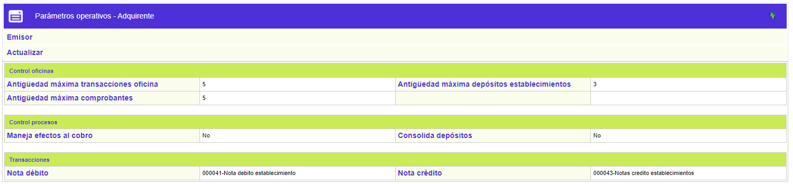
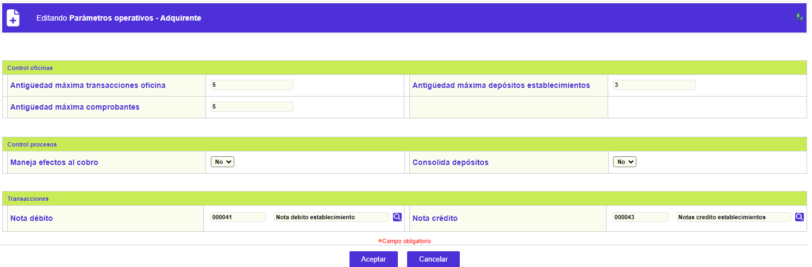
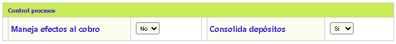
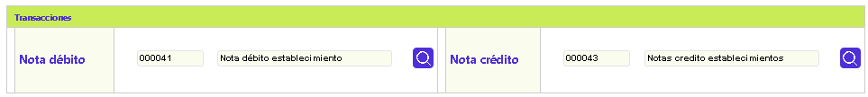

Parámetros operativos
Adquirente: El formulario inicial muestra el Detalle de todos los parámetros operativos correspondientes al Adquirente, con las opciones Actualizar y Emisor en la parte superior. Adicionalmente, también muestra a la derecha el globo con los parámetros de Localización Adquirente .

Actualizar: S i el usuario invoca la opción Actualizar se despliega un formulario con los siguientes bloques para modificar: Control oficinas, Control procesos, y Transacciones.
Control oficinas: Grupo de campos en los que la entidad fija sus políticas de plazos y descuadres monetarios máximos permitidos en la captura del movimiento de oficinas, en las consignaciones realizadas por los establecimientos y a nivel de comprobantes. Si los descuadres superan los parámetros será necesaria la intervención del Supervisor de canje. Este parámetro tiene incidencia en la contabilidad ya que los descuadres menores o iguales a cada uno de los valores determinados serán contabilizados en el Estado de resultados, si son superados se cargan contablemente a las sucursales.

|
Antigüedad máxima transacciones oficina |
Campo numérico de 2 dígitos, no obligatorio, contiene la cantidad máxima de días hábiles que la entidad concede como plazo para la captura de movimiento en las oficinas (avances, pagos e impuestos). |
|
Máximo valor descuadre transacción oficina |
Este campo numérico de 14 enteros y 2 decimales, no obligatorio, contiene el monto máximo de diferencia o descuadre permitido en la captura de movimiento de las oficinas (avances, pagos e impuestos). |
|
Antigüedad máxima depósitos establecimientos |
Campo numérico de 2 dígitos, no obligatorio, contiene la cantidad máxima de días hábiles que la entidad concede como plazo por defecto para la captura de las consignaciones efectuadas por los establecimientos, en caso en que dicho dato no aparezca dentro de la información de cada establecimiento. |
|
Valor máximo descuadre depósitos establecimientos |
Este campo numérico de 14 enteros y 2 decimales, no obligatorio, contiene el monto máximo de diferencia o descuadre permitido en la captura de cada consignación, si el valor de la diferencia es menor se cruza contra Ganancias y pérdidas de la sucursal, de lo contrario se afectaría a la oficina receptora del movimiento descuadrado. |
|
Antigüedad máxima comprobantes |
Campo numérico de 2 dígitos, no obligatorio, contiene la cantidad máxima de días hábiles que la entidad concede como plazo para la captura de los comprobantes que hacen parte de cada consignación. Si el plazo es excedido se constituye en causal de devolución de dicho movimiento. |
|
Valor máximo descuadre comprobantes |
En este campo numérico de 14 enteros y 2 decimales, no obligatorio, se indica el monto máximo de diferencia o descuadre permitido en la captura de cada comprobante; si el valor de la diferencia es menor se cruza contra Ganancias y pérdidas de la sucursal, de lo contrario se afectaría a la oficina receptora del movimiento descuadrado. |

|
Manejo efectos al cobro |
Campo que permite señalar si la entidad utiliza o no la funcionalidad de gestión de efectos al cobro o comprobantes de buena fe disponible dentro del sistema. |
|
Consolida depósitos |
Campo que posee lista adjunta de valores de Si o No; en el primer caso indica que todos los depósitos de una misma cuenta corriente, rotativo o de ahorros de los establecimientos, serán consolidados en la interface; cuando se selecciona No cada depósito electrónico será registrado individualmente en dicha interface. |
|
Captura requiere ingreso porcentaje descuento |
Campo que posee lista de valores adjunta de la cual se puede seleccionar entre Si o No, en la opción Captura movimiento oficinas es necesario ingresar el valor del descuento al momento de capturar las consignaciones, de uso transitorio mientras se universaliza el formato de consumos y consignaciones. |
|
Valor rechaza depósitos |
Este campo admite cualquier valor numérico de máximo 14 enteros y 2 decimales. |

|
Nota débito |
Este campo posee lista de valores poblada en la opción Orígenes de transacciones del grupo de Tablas reservadas del Núcleo, de la cual se debe seleccionar la transacción original correspondiente, siendo el código que permite identificar dentro de la interface de cuentas de depósitos a establecimientos que el registro corresponde a una nota débito. |
|
Nota crédito |
Campo con lista de valores poblada en la opción Orígenes de transacciones, de la cual se debe seleccionar la transacción original correspondiente, código que permite identificar dentro de la interface de cuentas de depósitos a establecimientos que el registro corresponde a una nota crédito. |
Volver a Emisor | Localización Emisor | Localización Adquirente